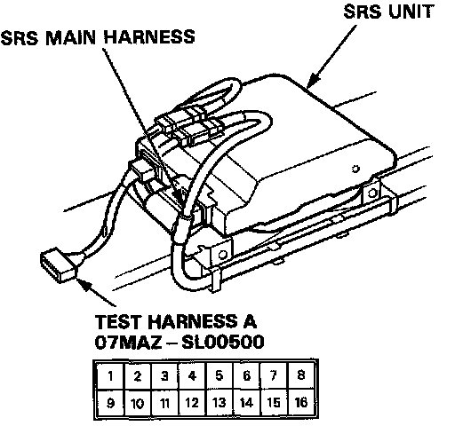

SRS Indicator Light Doesn't Go Off
SRS INDICATOR LIGHT STAYS ON CONTINUOUSLY
1. Make a photocopy of the next page.
2. Connect test harness A (O7MAZ-SLOO5OO) to the SRS unit as shown.

3. Turn the ignition switch ON.
- Voltages in the chart assume the car's "battery voltage" is about 12 volts. Less than 12 volts will result in different or possibly false readings.
- Do not disconnect the airbags from the circuit when checking SRS unit voltages.
4. First, check for voltage between Test Connector Terminal No.12 and ground.
- If voltage is indicated, there is a poor ground.
- If no voltage is indicated, continue with checking all the other terminals.
5. Record your voltage readings, for each terminal, in the row of blank boxes near the top of the chart.
6. Compare each reading with the voltage ranges listed in the column below it. If the reading is within a range, circle that range.
- If you circled all the Failure Mode ranges across any row, check the car for the Probable Failure Mode listed at the end of the row.
- If you did not circle all the ranges across any row, replace the SRS unit with a known-good unit, and retest.
- If all your voltage readings are now Normal, replace the original SRS unit.
- If your voltage reading are still not Normal but they don't match a complete row of Failure Mode ranges, check the condition of the SRS connectors shown in the system diagram.